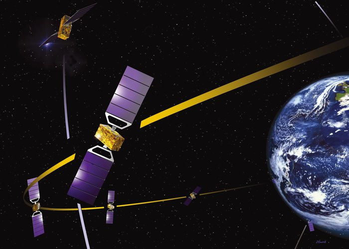

Galileo’s new technology will revolutionise our transport systems, increasing safety and improving efficiency; this will make for better quality of life and less pollution in our cities. Galileo will also bring benefits in other aspects of everyday life, with precision farming raising yields, improved information for emergency services speeding up response times, and more reliable and accurate time signals underpinning our most vital computer and communications networks.
